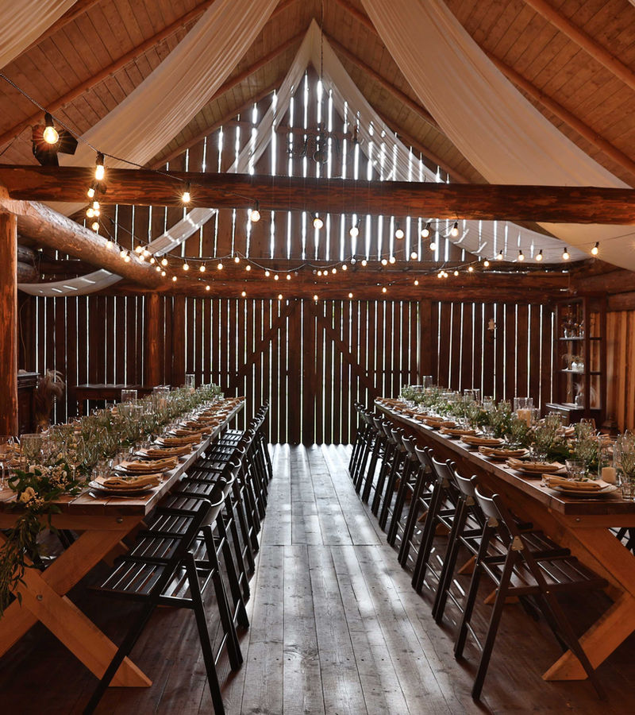
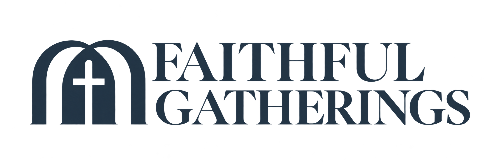
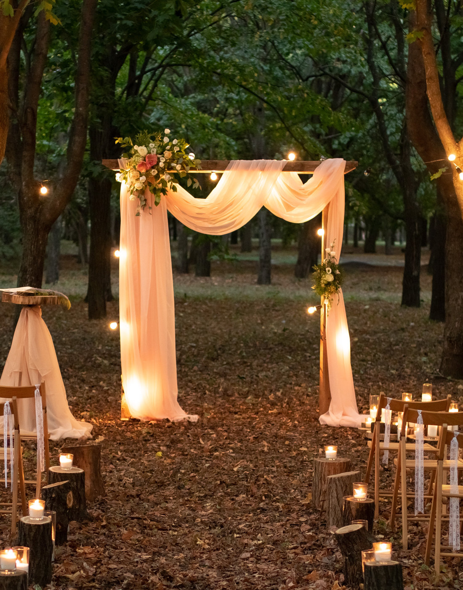
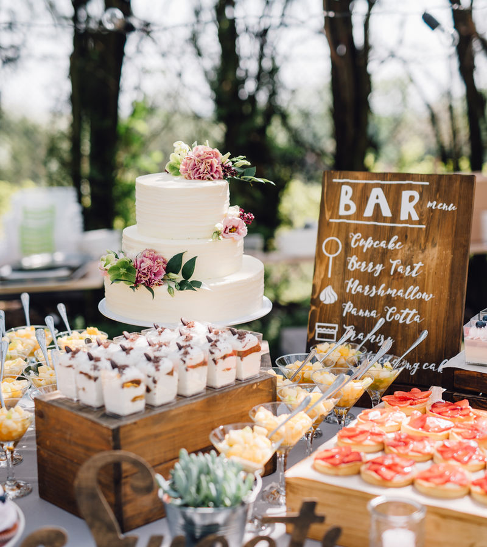
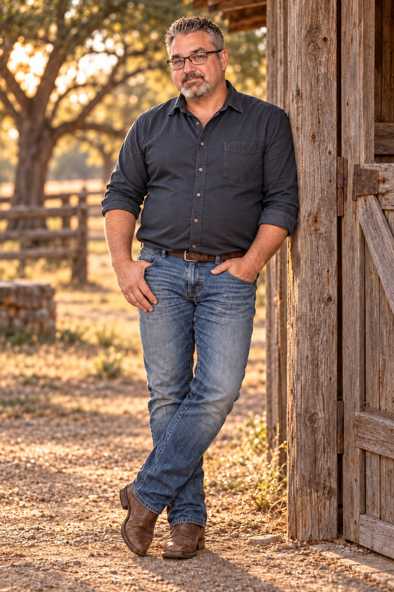

01Wedding planning
A wedding you’ll always remember, with a budget you can feel good about. We focus on what matters to you and find thoughtful ways to bring it to life.
Plan your wedding ↗
WEDDINGS. CELEBRATIONS. A LITTLE FAITH.
Beautifully planned around your budget.For the moments that become your forever. A little faith, a personal touch, and a celebration that feels like you.
Let’s make it unforgettable ↗
The beginning of something extraordinary.01 / HOW WE BRING IT TO LIFE
From the first idea to the finishing details, we help you decide where to spend, where to simplify, and how to make your celebration feel like you.

01A wedding you’ll always remember, with a budget you can feel good about. We focus on what matters to you and find thoughtful ways to bring it to life.
Plan your wedding ↗Corporate gatherings and personal celebrations, brought to life with the same care, creativity, and attention to detail.
Bring people together ↗
03Creative details and personal touches that make your gathering feel beautifully your own. Thoughtful design can make a meaningful impression without overspending.
Find your vision ↗BIG FEELINGS. THOUGHTFUL SPENDING.
You deserve a wedding that feels incredible without starting your next chapter stretched too thin. We help you put your money where your heart is.
Let’s talk about your budget ↗The ceremony. The people. The atmosphere. We start with what you’ll remember most, then build the plan around it.
Thoughtful décor, a focused vision, and personal touches can do more than an endless list of extras.
Bring the budget you have, even if you’re still figuring it out. We’ll talk honestly about your vision and the possibilities.

A little faith.
A lot of love.
I’m John Skinner. I believe a beautiful wedding should feel like you — and fit the life you’re building together.
At Faithful Gatherings, we start by listening. Your ideas, your priorities, your budget — they’re the foundation of a celebration that belongs to you.
Whether you have every detail imagined or are looking for a place to begin, we help turn those ideas into a cohesive, personal experience. Our heart is simple: to craft timeless moments, rooted in faith. A meaningful wedding is about your commitment and the people beside you. We believe it should be within reach.
Local roots. Room to roam. Based in the Forney and Mesquite area, serving couples and celebrations throughout Dallas–Fort Worth.
Tell us what you’re dreaming of ↗03 / FROM AN IDEA TO “I DO”
A thoughtful path from your first inspiration to a gathering filled with moments that matter.
Tell us about your occasion, what matters most, and the budget you have in mind.
Together, we prioritize the details you love and explore practical choices that respect your budget.
With a thoughtful plan in place, your celebration comes together with care and intention.
A FEW THINGS YOU MIGHT BE WONDERING
That’s at the heart of Faithful Gatherings. Share your budget and what matters most, and we’ll explore a thoughtful approach together. The possibilities depend on your date, location, guest count, and priorities.
No. Bring your ideas, your questions, or just a feeling. We’ll start by listening and help you find a direction that feels like you.
Absolutely. I’m an ordained minister. Tell me what you envision for your ceremony, and we can discuss how I may be able to support you.
Yes. We also help with corporate gatherings, personal celebrations, and décor and design. Choose the service that fits when you send your inquiry.
YOUR STORY. YOUR PEOPLE. YOUR DAY.
Have a date, a dream, or a budget you’re trying to make work? You don’t need to have it all figured out. Let’s start there.
FORNEY · MESQUITE · ALL OF DFW